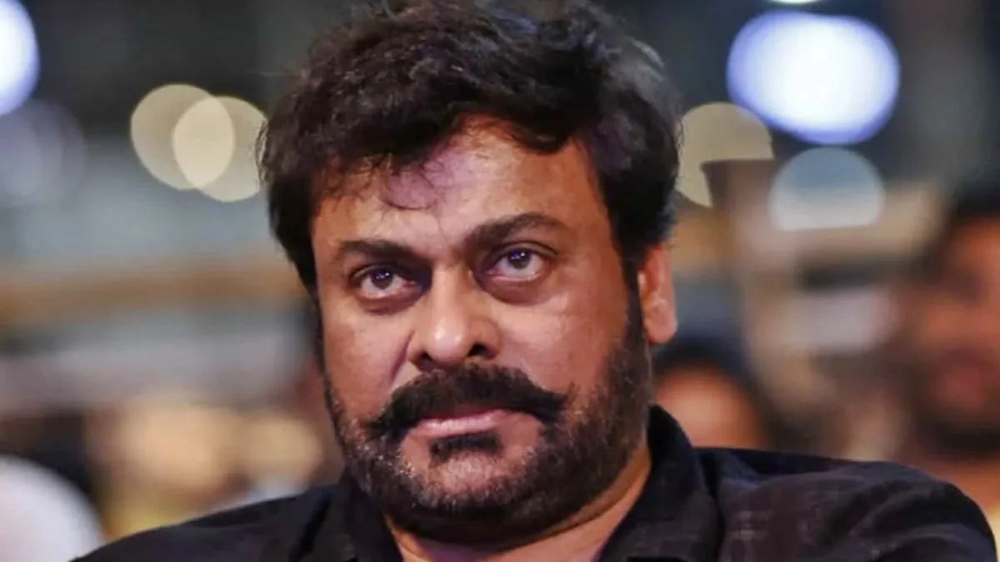

తెలుగు సినీ ప్రేక్షకులకు చిరంజీవి అనే పేరు ప్రత్యేకంగా పరిచయం చేయాల్సిన అవసరం లేదు. నాలుగు దశాబ్దాలకు పైగా తన నటన, డ్యాన్స్, యాక్షన్, కామెడీ, స్టైల్తో కోట్లాది మంది అభిమానులను సంపాదించుకున్న మెగాస్టార్ చిరంజీవి ఈరోజు తన 71వ పుట్టినరోజును జరుపుకుంటున్నారు. ఆగస్టు 22, 1955న జన్మించిన చిరంజీవి.. 2026లో 71వ వసంతంలోకి అడుగుపెట్టారు. ఆయన పుట్టినరోజు సందర్భంగా అభిమానులు పెద్ద ఎత్తున సంబరాలు చేసుకుంటున్నారు.
సినిమాల్లోకి రావాలనే లక్ష్యంతో అడుగులు వేసిన చిరంజీవి.. మొదట్లో చిన్న చిన్న పాత్రలతో తన ప్రయాణాన్ని ప్రారంభించారు. అయితే తనలో ఉన్న నటనా ప్రతిభను ఒక్కో సినిమాతో నిరూపించుకుంటూ అతి తక్కువ సమయంలోనే ప్రత్యేక గుర్తింపు తెచ్చుకున్నారు. కేవలం హీరోగా మాత్రమే కాకుండా.. తనదైన బాడీ లాంగ్వేజ్, డ్యాన్స్, ఫైట్స్, డైలాగ్ డెలివరీతో ప్రేక్షకులను ఆకట్టుకున్నారు.
1980, 1990 దశకాల్లో చిరంజీవి సినిమాలు బాక్సాఫీస్ వద్ద భారీ విజయాలను అందుకోవడంతో ఆయన స్టార్డమ్ మరింత పెరిగింది. ‘ఖైదీ’ వంటి సినిమాలు ఆయన కెరీర్ను మరో స్థాయికి తీసుకెళ్లాయి. ఆ తర్వాత వరుస విజయాలతో తెలుగు సినిమా పరిశ్రమలో అగ్ర కథానాయకుడిగా ఎదిగారు.

చిరంజీవి తెలుగు సినిమాకు కేవలం మంచి నటుడిని మాత్రమే ఇవ్వలేదు. డ్యాన్స్ విషయంలో కూడా కొత్త ట్రెండ్ను తీసుకొచ్చారు. అప్పటివరకు హీరోల డ్యాన్స్కు ఉన్న పరిమితులను చెరిపేసి.. వేగవంతమైన స్టెప్పులు, ప్రత్యేకమైన బాడీ మూవ్మెంట్స్తో ప్రేక్షకులను థియేటర్లలో ఉర్రూతలూగించారు.
ఆయన పాటలకు థియేటర్లలో అభిమానులు చేసే సందడి ఇప్పటికీ ప్రత్యేకంగానే ఉంటుంది. చిరంజీవి డ్యాన్స్ను చూసి ఎంతోమంది తర్వాతి తరం హీరోలు స్ఫూర్తి పొందారు. అందుకే ఆయనను కేవలం నటుడిగా కాకుండా తెలుగు సినిమా డ్యాన్స్కు కొత్త ఊపునిచ్చిన స్టార్గా కూడా అభిమానులు గుర్తిస్తారు.
చిరంజీవి స్టార్డమ్ పెరిగేకొద్దీ ఆయనకు ‘మెగాస్టార్’ అనే బిరుదు స్థిరపడిపోయింది. భారీ విజయాలు, విభిన్నమైన పాత్రలు, ప్రేక్షకులతో బలమైన అనుబంధం ఆయనను ఈ స్థాయికి తీసుకొచ్చాయి. కుటుంబ కథలు, యాక్షన్ సినిమాలు, కామెడీ, సామాజిక సందేశం ఉన్న కథలు.. ఇలా ఎన్నో విభిన్న జానర్లలో ఆయన తన నటనను చూపించారు.
చిరంజీవి కెరీర్లో ఎన్నో బ్లాక్బస్టర్ సినిమాలు ఉండటంతో పాటు.. తెలుగు సినిమా మార్కెట్ను విస్తరించడంలో కూడా ఆయన కీలక పాత్ర పోషించారు. ఆయన సినిమాలు విడుదలవుతున్నాయంటే అభిమానుల్లో ఏర్పడే క్రేజ్ ఇప్పటికీ అదే స్థాయిలో కనిపిస్తుంది.
సినిమాల్లో అగ్రస్థానంలో ఉన్న సమయంలో చిరంజీవి రాజకీయాల్లోకి కూడా అడుగుపెట్టారు. ప్రజారాజ్యం పార్టీని స్థాపించి ప్రజా జీవితంలోకి వచ్చిన ఆయన.. అనంతరం జాతీయ రాజకీయాల్లోనూ కీలక బాధ్యతలు చేపట్టారు. కేంద్ర మంత్రిగా కూడా పనిచేశారు.
అయితే రాజకీయ ప్రయాణం తర్వాత మళ్లీ సినిమాల వైపు అడుగులు వేశారు. చాలా సంవత్సరాల విరామం తర్వాత ‘ఖైదీ నంబర్ 150’తో వెండితెరపైకి తిరిగి రావడం అభిమానులకు పెద్ద పండుగలా మారింది.
రీఎంట్రీ తర్వాత కూడా చిరంజీవి వరుస సినిమాలతో ప్రేక్షకులను అలరిస్తున్నారు. ‘సైరా నరసింహారెడ్డి’, ‘ఆచార్య’, ‘గాడ్ఫాదర్’, ‘వాల్తేరు వీరయ్య’, ‘భోళా శంకర్’ వంటి సినిమాల్లో కనిపించారు. ముఖ్యంగా ‘వాల్తేరు వీరయ్య’ సినిమా ద్వారా తనలోని కామెడీ టైమింగ్, మాస్ యాక్షన్ను మరోసారి ప్రేక్షకులకు చూపించారు.
తాజాగా ‘మన శంకర వరప్రసాద్ గారు’ సినిమాతోనూ చిరంజీవి ప్రేక్షకుల ముందుకు వచ్చి మంచి స్పందన అందుకున్నారు. ఆయన వయసు పెరుగుతున్నా.. తెరపై మాత్రం తన ఎనర్జీతో అభిమానులను ఆశ్చర్యపరుస్తూనే ఉన్నారు.
తన పుట్టినరోజు సందర్భంగా సినీ పరిశ్రమ, క్రమశిక్షణ మరియు అభిమానుల ప్రేమ గురించి చిరంజీవి కీలక వ్యాఖ్యలు చేశారు. "కష్టం, పట్టుదల ఉంటే ఏ రంగంలోనైనా ఉన్నత స్థానానికి చేరుకోవచ్చని, సినీ ఇండస్ట్రీ తనను నటుడిగానే కాకుండా మంచి మనిషిగా తీర్చిదిద్దింది" అని ఆయన పేర్కొన్నారు. అంతేకాకుండా యువ కళాకారులకు ఎల్లప్పుడూ ప్రోత్సాహం ఉంటుందని తెలిపారు.
చిరంజీవి 71వ పుట్టినరోజు సందర్భంగా ఆయన 158వ సినిమాకు సంబంధించిన ప్రత్యేక అప్డేట్ కూడా రానుంది. బాబీ కొల్లి దర్శకత్వంలో తెరకెక్కుతున్న ఈ సినిమాకు ‘కాదిరి’ అనే టైటిల్పై భారీగా చర్చ జరుగుతోంది. ఆగస్టు 22న టైటిల్ గ్లింప్స్, టీజర్కు సంబంధించిన ప్రత్యేక అప్డేట్ వస్తుందని చిత్రబృందం ప్రకటించినట్లు సమాచారం.
ఈ సినిమా చిరంజీవి, బాబీ కొల్లి కాంబినేషన్లో వస్తున్న రెండో చిత్రం. గతంలో వీరిద్దరి కలయికలో వచ్చిన ‘వాల్తేరు వీరయ్య’ భారీ విజయాన్ని అందుకోవడంతో కొత్త సినిమాపై కూడా అభిమానుల్లో భారీ అంచనాలు ఉన్నాయి.
చిరంజీవి అభిమానుల దృష్టిలో ఆయన కేవలం ఒక హీరో కాదు. ఎన్నో సంవత్సరాలుగా తమ జీవితాల్లో భాగమైన వ్యక్తి. ఆయన సినిమా విడుదల అంటే పండుగ వాతావరణం నెలకొంటుంది. పుట్టినరోజు సందర్భంగా అభిమానులు సేవా కార్యక్రమాలు నిర్వహించడం, రక్తదాన శిబిరాలు ఏర్పాటు చేయడం వంటి కార్యక్రమాలు కూడా చేపడుతుంటారు.
సినిమాల్లో స్టార్గా ఎదిగినప్పటికీ.. సామాజిక సేవపై కూడా చిరంజీవి ప్రత్యేక దృష్టి పెట్టారు. ఆయన పేరిట నిర్వహించిన రక్తదాన కార్యక్రమాలు ఎంతోమందికి ఉపయోగపడ్డాయి. అందుకే అభిమానులు ఆయనను ప్రేమతో ‘అన్నయ్య’, ‘మెగాస్టార్’ అని పిలుచుకుంటారు.
ఒక సాధారణ యువకుడిగా సినిమా రంగంలోకి వచ్చిన వ్యక్తి.. తన కష్టంతో, పట్టుదలతో, ప్రతిభతో కోట్లాది మంది అభిమానులను సంపాదించుకుని మెగాస్టార్గా ఎదగడం సాధారణ విషయం కాదు. విజయాలు వచ్చినప్పుడు పొంగిపోకుండా, పరాజయాల సమయంలో వెనక్కి తగ్గకుండా ముందుకు సాగిన తీరు ఎంతోమందికి స్ఫూర్తి.
71 ఏళ్ల వయసులోనూ సినిమాలు చేస్తూ కొత్త తరానికి పోటీ ఇస్తున్న చిరంజీవి.. తన ఎనర్జీతో అందరినీ ఆశ్చర్యపరుస్తున్నారు. భవిష్యత్తులో కూడా మరిన్ని మంచి సినిమాలతో ప్రేక్షకులను అలరించాలని అభిమానులు కోరుకుంటున్నారు.